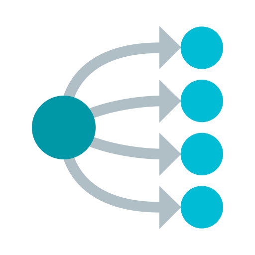

Create, Manage and Operate your KubeVirt Workloads
in a simple, effective and friendly Web User Interface.
Manage your Virtual Machines, Virtual Machine Pools, Data Volumes and other workloads related to Kubevirt in a single place!

Create and manage Kubernetes Services to load balance and expose traffic to your Virtual Machine Pools in simple fashion.
Easy to install and maintain, administrators and operators can take advantage of a friendly Web Interface instead of writing complex YAML files.